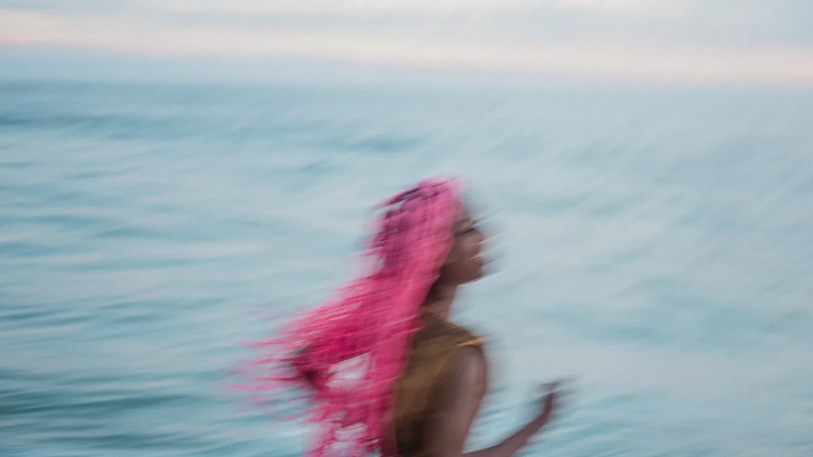
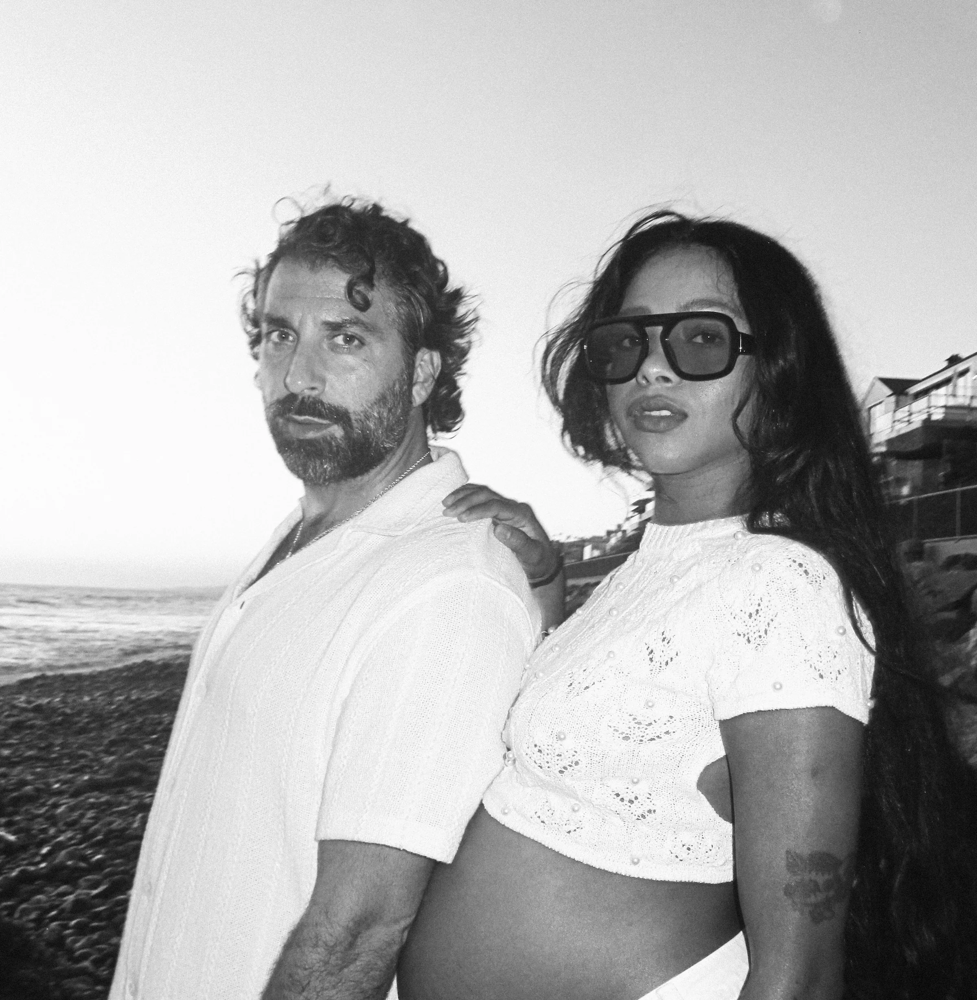
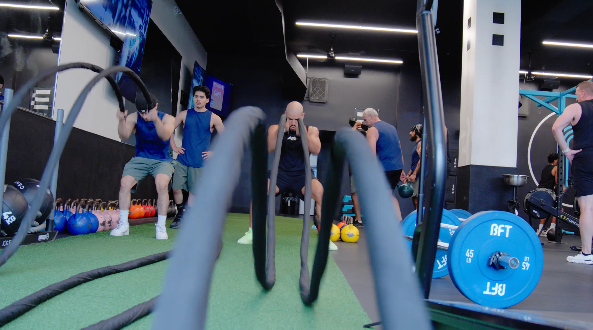
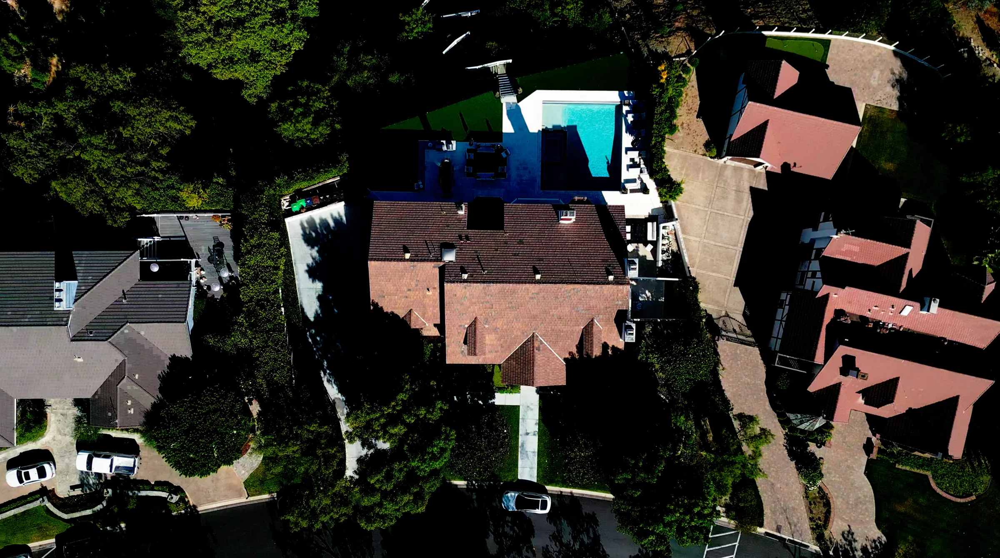

Commercial / Launch
Campaign
Photography and film that give a launch, product, or brand one coherent visual world.
Photography / Film / Direction
Built to the assignment
Built to the assignment
The assignment
Give the idea a world people can recognize.
Commercial work gets stronger when every frame feels like evidence from the same idea. First understand what the launch needs to communicate. Then make the imagery, motion, crops, and deliverables pull in one direction.


Direction
Every frame should advance the idea. Change the distance, energy, light, or point of view rather than creating more of the same picture.


Commercial / Launch